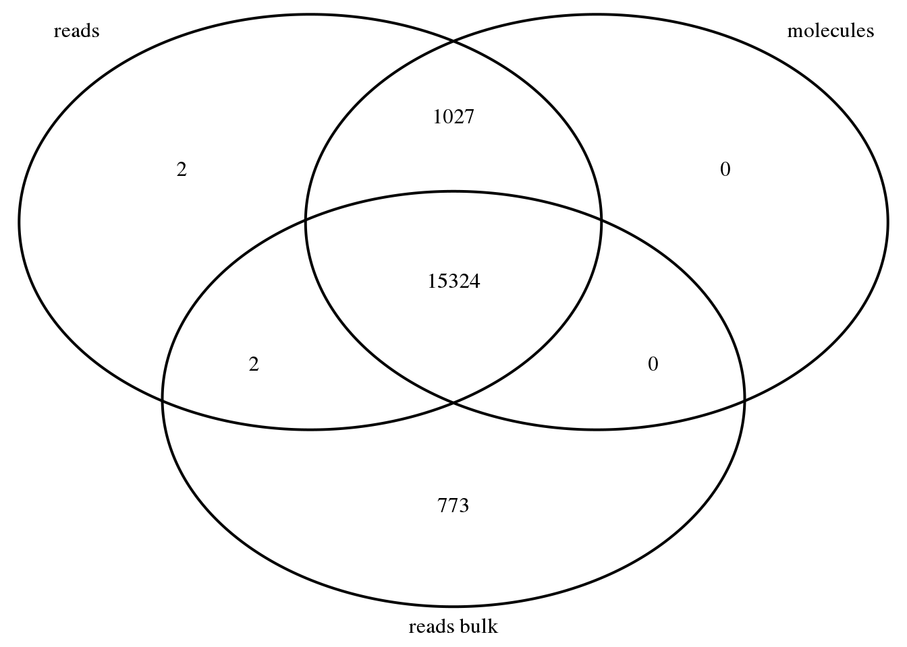

Last updated: 2017-03-06
Code version: 4a0bfb9
library("data.table")
library("dplyr")
library("VennDiagram")This analysis will take the matrix from the fastq to counts anayisis pipeline (sample-by-gene) to a standard gene-x-sample matrix. I will also create annotation files and romove the genes with no observed sequencing data in the experiment. I will use the data from git hub rather than the data I created because I want to look at the whole experiment rather than one plate at this point.
reads_raw_bri <- fread("../../single-cell/data/counts-matrix/reads-raw-single-per-sample.txt")
setDF(reads_raw_bri)Explore this data:
dim(reads_raw_bri)[1] 72 20422Ths has rows for each individule and the columns give information about the sample then give counts for each gene.
Create annotation file for single cell samples:
anno_bri <- reads_raw_bri %>%
dplyr::select(individual:well) %>%
mutate(batch = paste(individual, replicate, sep = "."),
sample_id = paste(batch, well, sep = "."))
head(anno_bri) individual replicate well batch sample_id
1 NA19098 r1 A01 NA19098.r1 NA19098.r1.A01
2 NA19098 r1 A02 NA19098.r1 NA19098.r1.A02
3 NA19098 r1 A03 NA19098.r1 NA19098.r1.A03
4 NA19098 r1 A04 NA19098.r1 NA19098.r1.A04
5 NA19098 r1 A05 NA19098.r1 NA19098.r1.A05
6 NA19098 r1 A06 NA19098.r1 NA19098.r1.A06dim(anno_bri)[1] 72 5This annoation file has information about the sample, replicatte, batch.
Transpose the matrix so that it is gene-x-sample.
reads_bri <- reads_raw_bri %>%
dplyr::select(starts_with("ENSG"), starts_with("ERCC")) %>%
t
colnames(reads_bri) <- anno_bri$sample_id
reads_bri[1:5, 1:5] NA19098.r1.A01 NA19098.r1.A02 NA19098.r1.A03
ENSG00000186092 0 0 0
ENSG00000237683 0 0 0
ENSG00000235249 0 0 0
ENSG00000185097 0 0 0
ENSG00000269831 0 0 0
NA19098.r1.A04 NA19098.r1.A05
ENSG00000186092 0 0
ENSG00000237683 48 0
ENSG00000235249 0 0
ENSG00000185097 0 0
ENSG00000269831 0 0Import eaw molecules for single cell samples.
molecules_raw_bri_lane <- fread("../../single-cell/data/counts-matrix/molecules-raw-single-per-lane.txt")
molecules_raw_bri <- fread("../../single-cell/data/counts-matrix/molecules-raw-single-per-sample.txt")
setDF(molecules_raw_bri)
setDF(molecules_raw_bri_lane)
dim(molecules_raw_bri)[1] 72 20422dim(molecules_raw_bri_lane)[1] 216 20425This data has rows by individuale and has gene columns like the reads data.
Conform single cell samples in reads and molecules files are in same order.
stopifnot(anno_bri$individual == molecules_raw_bri$individual,
anno_bri$replicate == molecules_raw_bri$replicate,
anno_bri$well == molecules_raw_bri$well)Transpose the matrix so it is also gene-x-sample. Had to change code to dplyr::select because select is also a function in biomaRt.
molecules_bri <- molecules_raw_bri %>%
dplyr::select(starts_with("ENSG"), starts_with("ERCC")) %>%
t
colnames(molecules_bri) <- anno_bri$sample_id
molecules_bri[1:5, 1:5] NA19098.r1.A01 NA19098.r1.A02 NA19098.r1.A03
ENSG00000186092 0 0 0
ENSG00000237683 0 0 0
ENSG00000235249 0 0 0
ENSG00000185097 0 0 0
ENSG00000269831 0 0 0
NA19098.r1.A04 NA19098.r1.A05
ENSG00000186092 0 0
ENSG00000237683 2 0
ENSG00000235249 0 0
ENSG00000185097 0 0
ENSG00000269831 0 0reads_bulk_raw_bri <- fread("../../single-cell/data/counts-matrix/reads-raw-bulk-per-sample.txt")
setDF(reads_bulk_raw_bri)Create annotation file for the bulk samples as we did for the single cells.
anno_bulk_bri <- reads_bulk_raw_bri %>%
dplyr::select(individual:well) %>%
mutate(batch = paste(individual, replicate, sep = "."),
sample_id = paste(batch, well, sep = "."))
head(anno_bulk_bri) individual replicate well batch sample_id
1 NA19098 r1 bulk NA19098.r1 NA19098.r1.bulkTranspose the bulk read information to match the gene-x-sample format.
reads_bulk_bri <- reads_bulk_raw_bri %>%
dplyr::select(starts_with("ENSG"), starts_with("ERCC")) %>%
t
colnames(reads_bulk_bri) <- anno_bulk_bri$sample_id
#pull in github data to compare
reads_bulk_raw <- fread("../../singleCellSeq/data/reads-raw-bulk-per-sample.txt")
setDF(reads_bulk_raw) #converts the data.table to a data.frame
anno_bulk <- reads_bulk_raw %>%
dplyr::select(individual:well) %>%
mutate(batch = paste(individual, replicate, sep = "."),
sample_id = paste(batch, well, sep = "."))
reads_bulk <- reads_bulk_raw %>%
dplyr::select(starts_with("ENSG"), starts_with("ERCC")) %>%
t
colnames(reads_bulk) <- anno_bulk$sample_id
reads_bulk_bri[1:15, 0:1]ENSG00000186092 ENSG00000237683 ENSG00000235249 ENSG00000185097
0 65 0 0
ENSG00000269831 ENSG00000269308 ENSG00000187634 ENSG00000268179
0 0 6 0
ENSG00000188976 ENSG00000187961 ENSG00000187583 ENSG00000187642
4214 245 13 1
ENSG00000188290 ENSG00000187608 ENSG00000188157
0 1656 1301 reads_bulk[1:15, 0:1]ENSG00000186092 ENSG00000237683 ENSG00000235249 ENSG00000185097
0 50 0 0
ENSG00000269831 ENSG00000269308 ENSG00000187634 ENSG00000268179
0 0 2 0
ENSG00000188976 ENSG00000187961 ENSG00000187583 ENSG00000187642
3575 54 8 2
ENSG00000188290 ENSG00000187608 ENSG00000188157
0 1525 670 I show more reads for the bulk samples as well.
stopifnot(rownames(reads_bulk_bri) == rownames(reads_bri),
rownames(reads_bri) == rownames(molecules_bri))
genes_observed_reads_bulk_bri <- rownames(reads_bulk_bri)[rowSums(reads_bulk_bri) > 0]
genes_observed_reads_bri <- rownames(reads_bri)[rowSums(reads_bri) > 0]
genes_observed_molecules_bri <- rownames(molecules_bri)[rowSums(molecules_bri) > 0]
stopifnot(genes_observed_molecules_bri %in% genes_observed_reads_bri)genes_venn_bri <- venn.diagram(x = list("reads" = genes_observed_reads_bri,
"molecules" = genes_observed_molecules_bri,
"reads bulk" = genes_observed_reads_bulk_bri),
filename = NULL, euler.d = FALSE, scaled = FALSE)
grid.newpage()
grid.draw(genes_venn_bri) This ven diagram shows the intesection of the genes found in each type of sequencing data. I will now remove all genes with no observed read in either bulk or single cell sample.
genes_observed_bri <- union(genes_observed_reads_bri, genes_observed_reads_bulk_bri)
reads_bri <- reads_bri[rownames(reads_bri) %in% genes_observed_bri, ]
molecules_bri <- molecules_bri[rownames(molecules_bri) %in% genes_observed_bri, ]
reads_bulk_bri <- reads_bulk_bri[rownames(reads_bulk_bri) %in% genes_observed_bri, ]There are 17128 genes.
Write the files to my cell_cycle git hub.
Annotations:
write.table(anno_bri, "../data/annotation_bri.txt", quote=FALSE, sep="\t", row.names = FALSE)
write.table(anno_bulk, "../data/annotation-bulk_bri.txt", quote=FALSE, sep = "\t", row.names=FALSE)Reads counts:
write.table(reads_bri, "../data/reads_bri.txt", quote = FALSE, sep = "\t", col.names = NA)
write.table(reads_bulk, "../data/reads-bulk_bri.txt", quote=FALSE, sep="\t", col.names = NA)Output molecule counts.
write.table(molecules_bri, "../data/molecules_bri.txt", quote= FALSE, sep= "\t", col.names = NA)sessionInfo()R version 3.3.2 (2016-10-31)
Platform: x86_64-redhat-linux-gnu (64-bit)
Running under: Scientific Linux 7.2 (Nitrogen)
locale:
[1] LC_CTYPE=en_US.UTF-8 LC_NUMERIC=C
[3] LC_TIME=en_US.UTF-8 LC_COLLATE=en_US.UTF-8
[5] LC_MONETARY=en_US.UTF-8 LC_MESSAGES=en_US.UTF-8
[7] LC_PAPER=en_US.UTF-8 LC_NAME=C
[9] LC_ADDRESS=C LC_TELEPHONE=C
[11] LC_MEASUREMENT=en_US.UTF-8 LC_IDENTIFICATION=C
attached base packages:
[1] parallel stats4 grid stats graphics grDevices utils
[8] datasets methods base
other attached packages:
[1] gridExtra_2.2.1 lme4_1.1-12 workflowr_0.4.0
[4] org.Hs.eg.db_3.4.0 GOstats_2.40.0 graph_1.52.0
[7] Category_2.40.0 Matrix_1.2-7.1 GO.db_3.4.0
[10] AnnotationDbi_1.36.2 IRanges_2.8.1 S4Vectors_0.12.1
[13] Biobase_2.34.0 BiocGenerics_0.20.0 Humanzee_0.1.0
[16] sva_3.22.0 genefilter_1.56.0 mgcv_1.8-15
[19] nlme_3.1-128 BiocInstaller_1.24.0 scales_0.4.1
[22] VennDiagram_1.6.17 futile.logger_1.4.3 edgeR_3.16.5
[25] limma_3.30.11 dplyr_0.5.0 testit_0.6
[28] data.table_1.10.4 biomaRt_2.30.0 cowplot_0.7.0
[31] stringr_1.2.0 reshape2_1.4.2 rmarkdown_1.3
[34] Citrus_0.99 easyGgplot2_1.0.0.9000 ggplot2_2.2.1
loaded via a namespace (and not attached):
[1] httr_1.2.1 splines_3.3.2 assertthat_0.1
[4] RBGL_1.50.0 yaml_2.1.14 RSQLite_1.1-2
[7] backports_1.0.5 lattice_0.20-34 digest_0.6.12
[10] minqa_1.2.4 colorspace_1.3-2 htmltools_0.3.5
[13] plyr_1.8.4 GSEABase_1.36.0 XML_3.98-1.5
[16] devtools_1.12.0 xtable_1.8-2 git2r_0.18.0
[19] tibble_1.2 annotate_1.52.1 withr_1.0.2
[22] lazyeval_0.2.0 survival_2.40-1 magrittr_1.5
[25] memoise_1.0.0 evaluate_0.10 MASS_7.3-45
[28] tools_3.3.2 munsell_0.4.3 locfit_1.5-9.1
[31] lambda.r_1.1.9 nloptr_1.0.4 RCurl_1.95-4.8
[34] rstudioapi_0.6 AnnotationForge_1.16.1 bitops_1.0-6
[37] labeling_0.3 gtable_0.2.0 DBI_0.5-1
[40] curl_2.3 R6_2.2.0 knitr_1.15.1
[43] rprojroot_1.2 futile.options_1.0.0 stringi_1.1.2
[46] Rcpp_0.12.9 This site was created with R Markdown